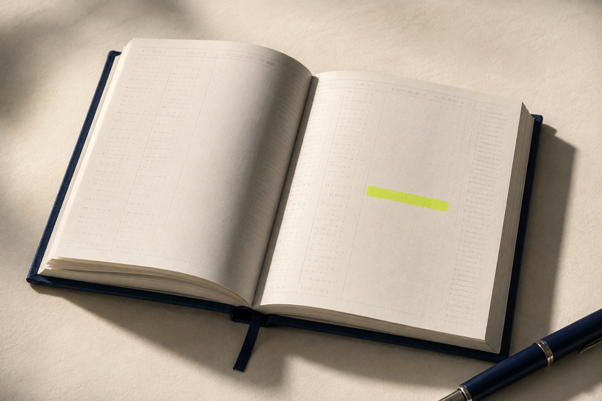
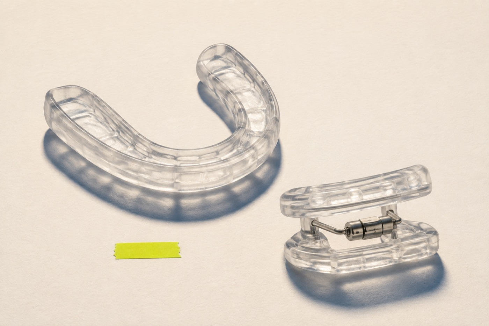
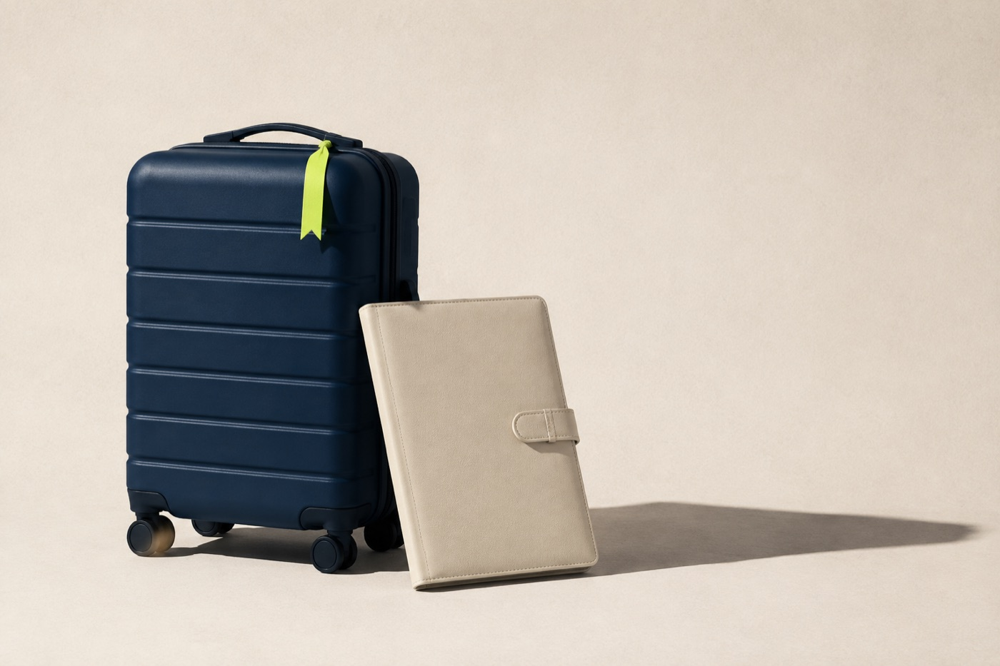
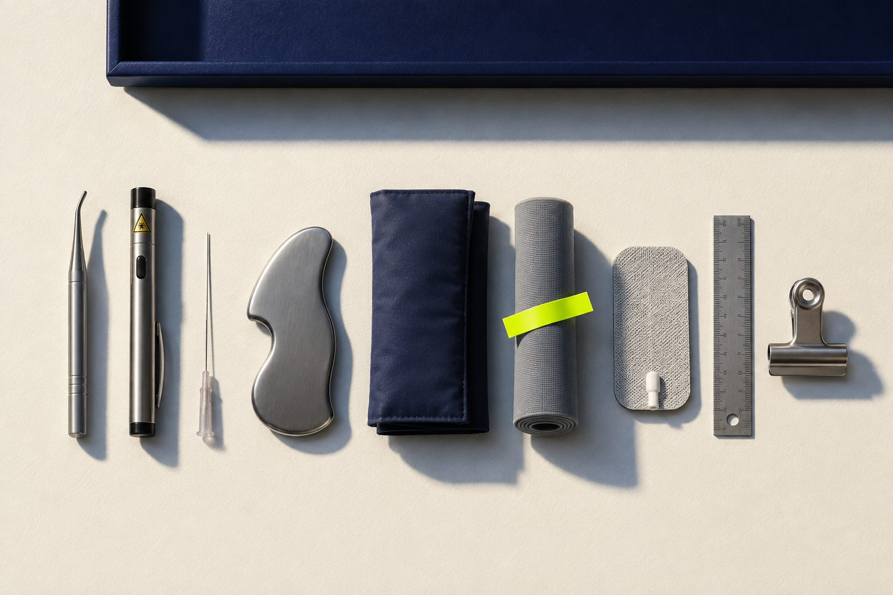
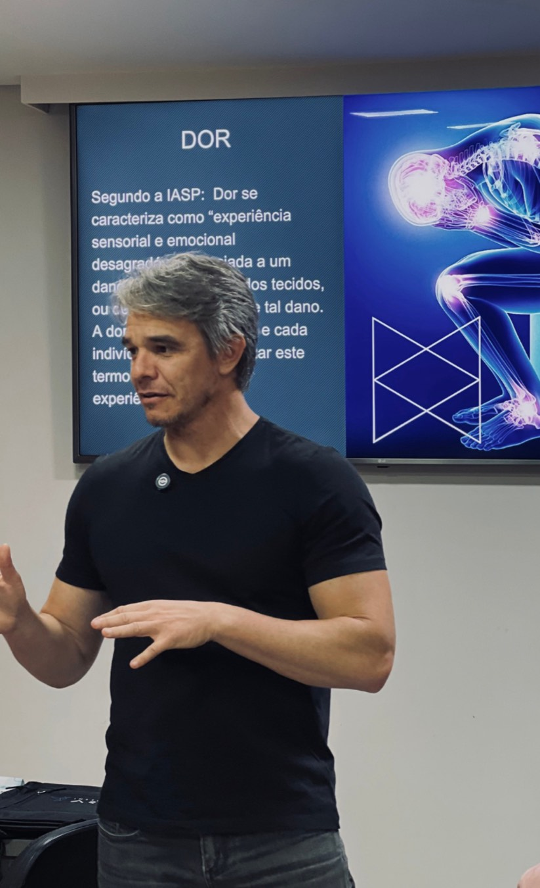
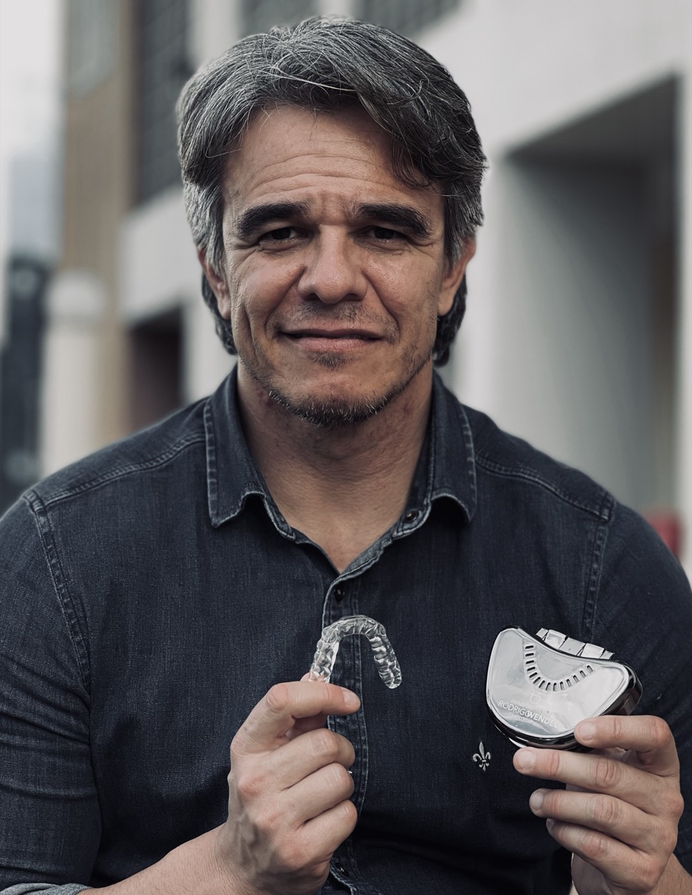
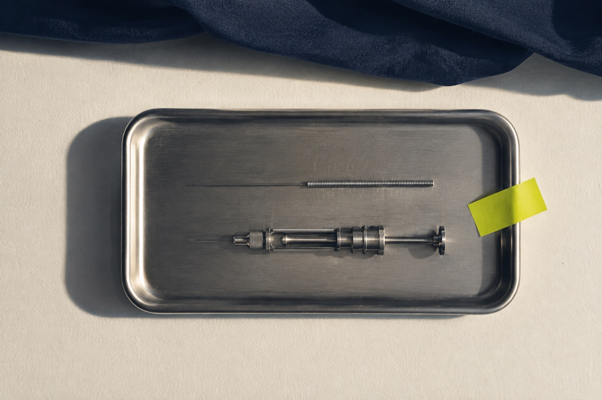

Formação em Diagnóstico e Tratamento de DTM
Meta-análise com 21 mil pessoas · Alqutaibi et al., 2025 · Journal of Oral & Facial Pain and Headache
Cada octógono é um quadro diagnóstico com prognóstico próprio.
310 dentistas, amostra da Índia · Prabhakar et al., 2024. O critério internacional de diagnóstico é o DC/TMD.

Você fecha a agenda de novo com o mesmo volume do mês passado.
É onde trava o consultório de clínica geral, por mês.
Achando que era só uma placa genérica, sem protocolo por trás.

A ferramenta certa para cada caso.
eletroestimulação e laser
pelo aluno, sob supervisão
ensina a indicar, não a executar
Encontros 1 a 15
Encontros 16 a 35
Encontros 36 a 43

Valor já validado na clínica do Dr. Wendel.
Três imersões presenciais, na clínica em Brasília.


No começo da carreira eu já fui conservador demais em alguns casos. Perdi o timing certo de intervir e vi duas pacientes com o mesmo diagnóstico terem desfechos opostos. Uma teve sequela. A outra não.
A diferença entre elas foi que a primeira passou por mim antes de eu ter o arsenal completo. Foi esse tipo de experiência, repetida por quase três décadas, que me levou a organizar o protocolo que vou te ensinar agora.
A régua que aplico com o paciente é a mesma que aplico com quem se forma na Academia DTM: falar o que dá certo e o que não dá.

O caso que hoje você devolve, amanhã senta na sua cadeira e sai resolvido.
É o que a formação vai custar a partir da segunda turma.
À vista ou 12x de R$ 1.250 sem juros.
R$ 13.547 abaixo do valor do pacote.
Para quem não consegue viajar três vezes no ano.

é esta reunião
aqui e por escrito depois
início em 2 de fevereiro de 2027
O paciente que você trata como bruxismo